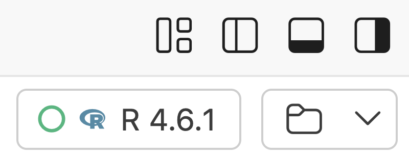
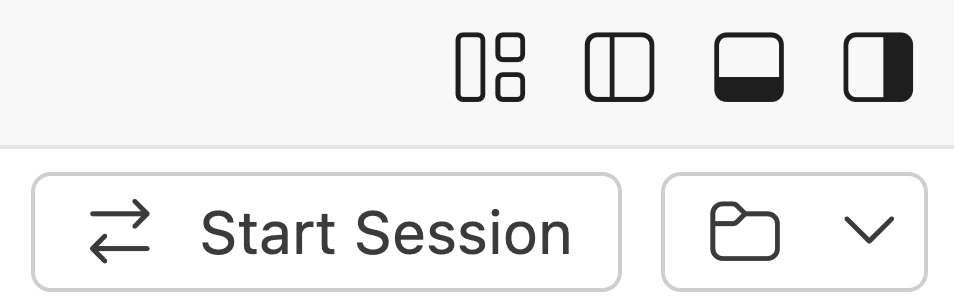

![]()

flowchart LR A["<b>Your computer</b><br>Positron's interface"] B["<b>Login node</b><br>osc-compute-proxy.sh<br>requests a job"] C["<b>Compute node</b><br>Positron server, R,<br>your files"] A -- "SSH (key pair)" --> B B -- "forwards the connection" --> C
Positron installation and setup
Week 12 – Lecture A
1 Overview
1.1 Why Positron?
In the remaining weeks of the course, you’ll write and run R code in Positron, an IDE created by Posit, the company behind the popular R IDE RStudio. Positron is a newer alternative to RStudio, and a good fit for this course:
- It is built on VS Code1, so it will look and feel very familiar (unlike RStudio).
- It adds data science features that VS Code lacks, like an R console, and panes for variables, plots, and help.
- Posit is investing heavily in Positron as its next-generation IDE (RStudio is still maintained, but most new features are going into Positron).
- It has much better support than RStudio for Python and for AI assistance.
NoteComing from RStudio? (Click to expand)
If you’ve used RStudio before, here is where to find its panes in Positron:
| In RStudio | In Positron |
|---|---|
| Source pane | Editor (center) |
| Console | Console (bottom) |
| Terminal | A tab next to the Console |
| Environment | Variables pane (right) |
| Plots | Plots pane (right) |
| Help | Help pane (right) |
| Viewer | Viewer pane (right) |
| History | History pane (right) |
| Files | Explorer (Activity Bar, far left) |
| Packages | Packages pane (Activity Bar) |
| Git | Source Control (Activity Bar) |
View(df) data viewer |
Data Explorer (opens as an editor tab) |
Many RStudio keyboard shortcuts also work in Positron, but some don’t, because Positron uses VS Code’s shortcuts. If you’d rather keep using RStudio’s shortcuts, turn on the setting workbench.keybindings.rstudioKeybindings, and restart Positron.
1.2 Positron at OSC
Unlike VS Code Server, Positron is not available through OSC OnDemand. Instead, you will install Positron on your own computer, and connect it to OSC using SSH. That way, only the program’s interface runs on your computer: like with VS Code Server, your files are at OSC, and R and your code run at OSC.
1.3 What we’ll do in this session
In this session, you will:
- Install Positron on your computer
- Set up the connection to OSC, make sure R is always loaded at OSC, and set up fast R package installation
- Connect Positron to an OSC compute node
- Check that Positron found R
- Open your personal folder at OSC
- Set up Claude Code in Positron
These are all one-time setup steps: there are quite a few of them, but once you’re done, reconnecting to OSC and opening your folder will take just a single click.
NoteDid you already connect a local VS Code installation to OSC? (Click to expand)
If you already connected a local VS Code installation to OSC, you can skip the following steps, because Positron uses the same files on your computer and at OSC:
- The SSH configuration file
- Avoid being prompted for your OSC password (you can also skip this if you set up an SSH key pair for OSC on the SSH page)
- The proxy script at OSC
But don’t skip the other steps: increasing the connection timeout (Positron has its own settings), making sure R is always loaded, and setting up faster R package installation.
2 Install Positron
Go to the Positron download page .
The “Recommended for you” box should have selected the correct download for your operating system2. Make sure it is the User install (the System install requires admin rights). Most Windows computers need the x64 version, so select that unless you know that yours has an ARM processor.
Click the download button, and then accept the license agreement to start the download.
Run the
.exeinstaller and follow the prompts.
Go to the Positron download page .
The “Recommended for you” box should have selected the correct download for your operating system3. However, you need either the Apple Silicon or the Intel version, and the page can’t always tell which one you need. To check, click the Apple menu () >
About This Mac: if it lists a “Chip” that starts with “Apple” (e.g. “Apple M2”), you need Apple Silicon, and if it lists a “Processor” with “Intel” in the name, you need Intel.Click the download button, and then accept the license agreement to start the download.
Open the
.dmgfile and drag Positron to:- If this is your own computer: your Applications folder
- If this is an OSU-managed computer without admin rights: your personal Applications folder,
/Users/<username>/Applications(this folder is in the same parent folder as your Documents, Downloads, and Desktop folders; create it if it doesn’t exist yet).
Go to the Positron download page and download the
.debor.rpmfile, depending on your distribution.Use your package manager to install the downloaded file, e.g. from the folder with the downloaded file:
For a
.debfile (e.g. Ubuntu, Debian):sudo apt install ./Positron-*.debFor an
.rpmfile (e.g. Fedora, RHEL):sudo dnf install ./Positron-*.rpm
Then, open Positron!
3 Setting up the connection to OSC
Because Positron is built on VS Code, it connects to OSC in the same way as a local VS Code installation does (see the reference page dedicated to this), using the same SSH configuration4.
3.1 The SSH configuration file
We will define two remote “hosts” at OSC that you can connect to:
osc-pitzer-loginconnects to a login node of OSC’s Pitzer cluster.osc-pitzer-computeconnects to a compute node of OSC’s Pitzer cluster.
Go ahead and:
Open the Command Palette (Ctrl/⌘+Shift+P or
View>Command Palette) and type “remote open”. Then, select “Remote-SSH: Open SSH Configuration File…”:This will open your SSH configuration file,
~/.ssh/config, which is probably empty. Paste the following into it (note the separate tabs for Windows and Mac below! Linux users: use the Mac version):~/.ssh/config
Host osc-pitzer-login User osc-username HostName pitzer.osc.edu Host osc-pitzer-compute User osc-username ForwardAgent yes StrictHostKeyChecking no UserKnownHostsFile=/dev/null ConnectTimeout 120 ProxyCommand C:/Windows/System32/OpenSSH/ssh.exe -o LogLevel=QUIET -o BatchMode=yes osc-pitzer-login ./osc-compute-proxy.sh~/.ssh/config
Host osc-pitzer-login User osc-username HostName pitzer.osc.edu Host osc-pitzer-compute User osc-username ForwardAgent yes StrictHostKeyChecking no UserKnownHostsFile=/dev/null ConnectTimeout 120 ProxyCommand ssh -o LogLevel=QUIET -o BatchMode=yes osc-pitzer-login ./osc-compute-proxy.shChange both occurrences of osc-username to your actual OSC username (e.g.
User jelmer) — this is not your OSU name.# (if you’re not sure, runwhoamiin a terminal at OSC).Save the file.
TipWhy is the compute node entry in the config file so complicated? (Click to expand)
Because you can’t connect directly to a compute node, this connection first goes to a login node, and there runs a script (osc-compute-proxy.sh, see below) that requests a compute job and then passes on the connection to the compute node you’ve been assigned:
3.2 Avoid being prompted for your OSC password
Next, we’ll set up an SSH key pair5, so you won’t be prompted for your OSC password6:
Open a terminal in Positron (
Terminal>New Terminal).Run the following command to generate an SSH key pair7. You’ll be asked several questions, as shown below — in each case, just press Enter to select the default answer. (If you’re instead told that the file already exists and asked whether to overwrite it, type
n: you already have a key pair, and can move on to the next step.)ssh-keygen -t ed25519Generating public/private ed25519 key pair. Enter file in which to save the key (/Users/poelstra.1/.ssh/id_ed25519): Enter passphrase for "/Users/poelstra.1/.ssh/id_ed25519" (empty for no passphrase): Enter same passphrase again:After the last question, it should print:
Your identification has been saved in /Users/poelstra.1/.ssh/id_ed25519 Your public key has been saved in /Users/poelstra.1/.ssh/id_ed25519.pub The key fingerprint is: SHA256:T6LFPl2MpV4c5/8ixJFB96A12+tcCGY8F+1oof7q3b8 poelstra.1@OHQ73DH4TP2V The key's randomart image is: +--[ED25519 256]--+ | .. *. | | ..+.B.| | X+++o| | . O+Bo.o| | S +o=oo..| | + * o+ o..| | . o +. . o.| | . ..o..| | .oo.E*| +----[SHA256]-----+Transfer the public key to OSC (enter your OSC password when prompted):
- If this is your first SSH connection to OSC from this computer, you’ll first be asked whether you’re sure you want to continue connecting: type
yesand press Enter. - When typing your password, nothing will appear on screen: that’s normal.
cat ~/.ssh/id_ed25519.pub | ssh osc-pitzer-login 'mkdir -p .ssh && cat >> .ssh/authorized_keys'<user>@pitzer.osc.edu's password:Other than the password prompt, this command doesn’t print anything.
ssh-copy-id osc-pitzer-login/usr/bin/ssh-copy-id: INFO: Source of key(s) to be installed: "/Users/poelstra.1/.ssh/id_ed25519.pub" /usr/bin/ssh-copy-id: INFO: attempting to log in with the new key(s), to filter out any that are already installed /usr/bin/ssh-copy-id: INFO: 1 key(s) remain to be installed -- if you are prompted now it is to install the new keys <user>@pitzer.osc.edu's password: Number of key(s) added: 1 Now try logging into the machine, with: "ssh 'osc-pitzer-login'" and check to make sure that only the key(s) you wanted were added.- If this is your first SSH connection to OSC from this computer, you’ll first be asked whether you’re sure you want to continue connecting: type
Test it: the following should print OSC’s login message and then the name of a Pitzer login node, without asking for your password (you may or may not see a warning about “post-quantum key exchange” at the top: you can safely ignore it):
ssh osc-pitzer-login hostname** WARNING: connection is not using a post-quantum key exchange algorithm. ** This session may be vulnerable to "store now, decrypt later" attacks. ** The server may need to be upgraded. See https://openssh.com/pq.html ****************************************************************************** This system is for the use of authorized users only. Individuals using this computer system without authority, or in excess of their authority, are subject to having all of their activities on this system monitored and recorded by system personnel. In the course of monitoring individuals improperly using this system, or in the course of system maintenance, the activities of authorized users may also be monitored. Anyone using this system expressly consents to such monitoring and is advised that if such monitoring reveals possible evidence of criminal activity, system personnel may provide the evidence of such monitoring to law enforcement officials. ****************************************************************************** pitzer-login03.hpc.osc.edu
3.3 The proxy script at OSC
The compute node connection runs a short “proxy script” in your Home dir at OSC. Copy it there by running the following command in your Positron terminal (this should only print the same OSC login messages as in the previous step):
ssh osc-pitzer-login 'cp /fs/ess/PAS3493/share/osc-compute-proxy.sh ~/ && chmod +x ~/osc-compute-proxy.sh'
NoteMore about the proxy script
This script contains the following:
~/osc-compute-proxy.sh
#!/bin/bash
exec salloc --quiet -A PAS3493 -c 2 -t 300 bash -c 'nc $SLURM_NODELIST 22'That is, it requests a compute job (salloc) with 2 cores for 300 minutes (5 hours) with the course’s OSC Project PAS3493, and then connects to the compute node you were assigned (nc ... 22). The job ends when you close Positron, or when its 5 hours are up, in which case Positron will lose its connection and you’ll need to reconnect.
You can adjust these values if you want more time or cores (and memory). Once the course is over, you should no longer use the course’s OSC Project. To change the Project, open ~/osc-compute-proxy.sh at OSC and edit PAS3493.
NoteAlternative: the proxy script on your own computer (Click to expand)
If the compute node connection doesn’t work for you (you’ll test this below), try this alternative setup (if you already did this for a local VS Code installation, you’re all set: both files below are on your computer, where Positron uses them as well):
In the SSH configuration file, change the
ProxyCommandline forosc-pitzer-computeto:~/.ssh/config (excerpt)
ProxyCommand C:/Users/<computer-username>/.ssh/osc-compute-proxy.cmd %h~/.ssh/config (excerpt)
ProxyCommand /Users/<computer-username>/.ssh/osc-compute-proxy.sh %hwhere
<computer-username>is your username on your computer (it’s also in the path to the SSH configuration file).Create the proxy script by running the following in the Positron terminal:
This assumes you are using PowerShell, the default Windows shell in Positron (you should see “PowerShell” in the top right of the terminal). If you are using Git Bash or WSL, use the Mac instructions instead.
@' @echo off ssh -o LogLevel=QUIET -o BatchMode=yes osc-pitzer-login "/usr/bin/salloc -A PAS3493 -c 2 -t 300 /bin/bash -lc 'nc $SLURM_NODELIST 22'" '@ | Out-File -Encoding ascii "$env:USERPROFILE\.ssh\osc-compute-proxy.cmd"cat > ~/.ssh/osc-compute-proxy.sh << 'EOF' #!/bin/bash exec ssh -o LogLevel=QUIET -o BatchMode=yes osc-pitzer-login \ "/usr/bin/salloc -A PAS3493 -c 2 -t 300 /bin/bash -c 'nc \$SLURM_NODELIST 22'" 2>/dev/null EOF chmod +x ~/.ssh/osc-compute-proxy.sh
3.4 Increase the connection timeout
Because it can take a little while to get a compute job, you also need to increase the time Positron will wait for a connection: open the Positron Settings ( > Settings), search for remoteSSH.connectTimeout, and change its value from 60 to 300 (seconds)8:

3.5 Make sure R is always loaded at OSC
R is installed but not automatically loaded at OSC. To make sure Positron will find R when it connects to OSC, we’ll always load one of OSC’s R modules by adding a module load command to your Bash settings file at OSC, ~/.bashrc (learn more about this file here). Run the following in your Positron terminal (again, the output should only consist of OSC’s login messages):
ssh osc-pitzer-login "echo 'module load gcc/12.3.0 R/4.6.1' >> ~/.bashrc"From now on, every new shell at OSC will load R, so whenever you open a terminal at OSC or run an ssh command to OSC, you may see the following message — that’s expected, and harmless:
Lmod is automatically replacing "intel/2021.10.0" with "gcc/12.3.0".
Due to MODULEPATH changes, the following have been reloaded:
1) mvapich/4.1
WarningYou may need to update this line in the future
Over time, the R versions available at OSC will change, as may the version that you personally want to use. (On the plus side, this command currently works on all three OSC clusters, since they have the same R modules.) If you later need a different R version, or if Positron suddenly no longer finds R, edit the module load line in ~/.bashrc (you can see the available versions with module spider R).
3.6 Faster R package installation at OSC
By default, R packages are installed at OSC by compiling them from their source code, which can take a long time: over 20 minutes for the tidyverse that we’ll use in week 13. Instead, we’ll have R download ready-to-use (“binary”) packages from Posit Package Manager , which takes only a few minutes.
To do so, we’ll add a few lines to your R settings file at OSC, ~/.Rprofile. Run the following in your Positron terminal (the output should only consist of OSC’s login messages and the Lmod message shown above):
ssh osc-pitzer-login 'cat /fs/ess/PAS3493/share/Rprofile >> ~/.Rprofile'
NoteWhat does this add to your
~/.Rprofile? (Click to expand)
R runs the code in ~/.Rprofile every time it starts. The lines we added are:
~/.Rprofile
# Install R packages as precompiled binaries from Posit Package Manager
options(
repos = c(CRAN = "https://packagemanager.posit.co/cran/__linux__/rhel9/latest"),
BioC_mirror = "https://packagemanager.posit.co/bioconductor/__linux__/rhel9/latest",
HTTPUserAgent = sprintf(
"R/%s R (%s)", getRversion(),
paste(getRversion(), R.version["platform"], R.version["arch"], R.version["os"])
)
)reposandBioC_mirrormake R download regular (CRAN) and Bioconductor packages, respectively, from Posit Package Manager, with binaries for the operating system that OSC uses (Red Hat Enterprise Linux 9,rhel9).HTTPUserAgenttells Package Manager which R version you use, so it sends packages that were built for that version.
Posit Package Manager is free to use, so you can keep these settings after the course.
4 Connecting to OSC
Now that the SSH configuration is set up, let’s try to connect Positron to OSC!
Open the Command Palette9 and type “SSH connect”.
Select “Remote-SSH: Connect Current Window to Host…”10 and then choose
osc-pitzer-compute:Positron will connect to OSC: the first time, this may take five minutes or so, because Positron needs to install its “server” component in your Home dir at OSC. After that, connecting will be faster, but typically still takes 30 seconds or so, because a compute job needs to be requested and started.
If you’re on Windows, you may also get a pop-up like this — click “Allow”:


Once it has connected, let’s double-check you’re on a Pitzer compute node — open a terminal in Positron (Terminal > New Terminal), and run hostname:
# Compute node names start with something like p0133, not with pitzer-login
hostnamep0133.ten.osc.edu
NoteIf the compute node connection fails or seems stuck (Click to expand)
First, simply try again: a first connection attempt regularly fails, while the second one works.
If it fails again, find out which part of the connection fails by running these commands in a terminal on your own computer (open a new Positron window with File > New Window if needed):
ssh osc-pitzer-login hostnameshould print a login node name without asking for your password. If it asks for a password, redo the SSH key step. If it errors, check the username in your SSH configuration file.ssh osc-pitzer-compute hostnameshould print a compute node name (after up to a minute or so). If it fails, make sure the proxy script exists:ssh osc-pitzer-login ls -l osc-compute-proxy.sh.
If the compute node connection still doesn’t work, try the alternative setup with the proxy script on your own computer. If that doesn’t help either, try the osc-pitzer-login connection instead, which is less likely to fail and is faster to connect to.
However, this should be a temporary last-resort solution, because Positron then runs on a login node rather than on a compute node. This means that you should avoid running any analyses in the terminal or the R console. On top of that, Positron itself takes up resources on the login node, and OSC prefers that you don’t do this.
5 Check that Positron found R
- In the top-right corner of the window, you should see
R 4.6.1, as shown in the top screenshot. (If instead you’re seeing “Start Session”, as in the bottom screenshot, see the box below.)


Click the Console tab (next to the Terminal tab, at the bottom). You should see something like the following:

WarningIf R is not loaded, or Python is loaded instead (Click to expand)
First, try reloading Positron: open the Command Palette, type “Reload Window”, and select “Developer: Reload Window”:

If that doesn’t help, click on the “Start Session” button shown in the earlier screenshot (or on the Python version, if that is shown instead), and select New Console Session:

If R 4.6.1 is listed, select it. If not, ask us to troubleshoot!
6 Open your personal folder
Positron really wants you to open a folder, even more so than VS Code (you’ll learn why that is a good idea in the next lecture).
Open your personal dir, /fs/ess/PAS3493/people/<user>, by clicking the “Open Folder” button in the Explorer, shown in the screenshot on the right (open the Explorer first if needed)11.

Like in VS Code, you’ll have to “Trust” a folder for full access — in Positron, this is essential, because R won’t start in an untrusted folder:
In the banner at the top, shown in the screenshot below, click “Manage”.
In the dialog that appears, click “Trust” and close the dialog.


TipReconnecting from now on will be very simple!
Like in VS Code, after connecting once, the folder will appear in Positron’s “Recent” list on the Welcome tab. Therefore, you can now reconnect to OSC and open this folder with a single click!
7 Set up Claude Code in Positron
In weeks 8 and 9, you used Claude Code in VS Code. Because Positron is a version of VS Code, it works there too, and you’ll use it throughout the R part of the course.
- In Positron’s Extensions side bar, search for “claude”, and install the extension “Claude Code for VS Code”, like you did in VS Code.
- Because Positron is connected to OSC, Claude will use the settings file with your API key in your Home dir at OSC that you already set up, so there is no need to add your API key again.
- Open Claude like in VS Code, and check that it responds to a prompt.
Claude’s workspace is the folder you have open in Positron, and like in VS Code, you can add your files and code to your prompt.
NoteLast-resort fallback: RStudio Server at OSC
If you can’t get Positron to work, you can instead use RStudio Server, an Interactive App at OSC OnDemand. RStudio has the same main components as Positron, like a code editor, an R console, and panes for your environment, plots, and help, but they are laid out differently and you’ll have to find your own way at times.
- Log in to OSC’s OnDemand portal at https://ondemand.osc.edu .
- In the blue top bar, select
Interactive Appsand then near the bottom, clickRStudio Server. - Fill out the form as follows:
- Cluster:
pitzer - R version:
4.6.1 - Project:
PAS3493 - Number of hours:
2 - Node type:
any - Number of cores:
2
- Cluster:
- Click
Launch. - Click the
Connect to RStudio Serverbutton once it appears.
Instead of opening a folder like in Positron, use an “RStudio Project” for your personal dir: File > New Project > Existing Directory, and then browse to /fs/ess/PAS3493/people/<user>.
Footnotes
Specifically, on Code OSS, the open-source base of VS Code. Positron is really a variant (“fork”) of VS Code.↩︎
If not, click the “All platforms” link below the download button to select the right one.↩︎
If not, click the “All platforms” link below the download button to select the right one.↩︎
The only difference is that you don’t need to install any extension, because Positron has remote SSH support built in.↩︎
Does this sound familiar? At OSC, we’ve previously set up an SSH key pair for GitHub authentication.↩︎
This is required for the compute node connection, and convenient for the login node connection and any other SSH connection to OSC.↩︎
This terminal runs on your own computer, and this command works regardless of whether you’re using Windows or Mac.↩︎
Do this even if you already did so in VS Code, because Positron has its own settings (and note that the name of this setting is slightly different from the one in VS Code).↩︎
Ctrl/⌘+Shift+P or
View>Command Palette↩︎The only difference with the “Connect to Host…” option is that the latter will open a whole new Positron window that will be connected.↩︎
Or you can use
File>Open Folderlike you’re used to in VS Code.↩︎